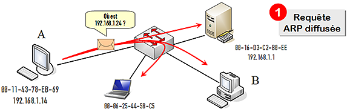
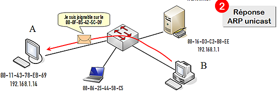
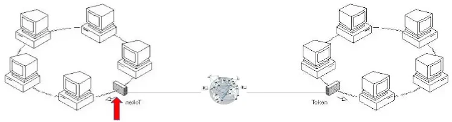

ARP
ARP est un protocole qui permet de trouver les correspondances adresse MAC / adresse IP des équipements situés sur la LAN. Ce protocole opère sur le LAN, il n’est pas relayé par les routeurs.
1. ARP sur le LAN
1.1. Principe
-
un équipement souhaite envoyer des données à
192.168.1.20 -
cet équipement broadcast une requête ARP : "qui d’entre vous possède l’IP
192.168.1.20?" (paquet ARP de type who-has)
-
chaque machine du LAN reçoit donc ce paquet ARP, et prend connaissance de l’adresse IP recherchée par l’émetteur ; comme chaque machine connait sa propre adresse IP, l’une d’elles va se reconnaitre
-
celle-ci insère alors son adresse MAC dans le paquet ARP, et l’envoie à l’émetteur (paquet ARP de type is-at)

2. ARP lors d’une communication Internet
L’opération précédente est réalisée sur tous les LAN traversés. Ci-dessous sont expliquées les résolutions ARP au départ et à l’arrivée de l’information.
Soit une machine source S connectée à son LAN.
S souhaite expédier un paquet d’information à une machine distante D.
2.1. Emission
-
S insère l’adresse IP de la destination comme destinataire du paquet, c’est-à-dire l’adresse IP de D.
-
Comme S et D ne sont pas sur le même LAN, S doit donc envoier le paquet à sa passerelle. Pour cela, la couche physique de S doit connaitre l’adresse MAC de la passerelle.
-
Puisque S connait l’adresse IP de sa passerelle, S envoie un broadcast ARP de type who-has "qui possède l’adresse IP de la passerelle ?" :
-
Chaque équipement du LAN reçoit donc ce paquet ARP, et prend connaissance de l’adresse IP recherchée par S. Comme chaque équipement connait sa propre adresse IP, l’un d’eux va se reconnaitre. Celui-ci renvoie à S sont adresse MAC dans un paquet ARP de type is-at :
-
S récupère en retour l’adresse MAC souhaitée. Sa couche physique peut donc envoyer les data à la passerelle.

2.2. Progression
Le paquet progresse ensuite sur Internet, ou ce processus est répliqué sur chaque LAN traversé.
2.3. Réception
Le paquet finit par arriver sur la passerelle du LAN auquel est connectée D.
Celle-ci doit délivrer le paquet à D. Elle récupère l’adresse IP de D dans les metadata du paquet, et en déduit que D est sur son LAN. Pour lui transmettre le paquet, elle doit trouver l’adresse MAC de D. Comme précédemment :
-
la passerelle broadcaste sur son LAN un paquet ARP who-has contenant l’adresse IP de D
-
chaque machine du LAN reçoit donc ce paquet ARP, et prend connaissance de l’adresse IP recherchée par la passerelle. D se reconnait, et insère donc son adresse MAC dans un paquet ARP de type is-at, et le renvoie à la passerelle
-
la passerelle peut donc lui transmettre les data